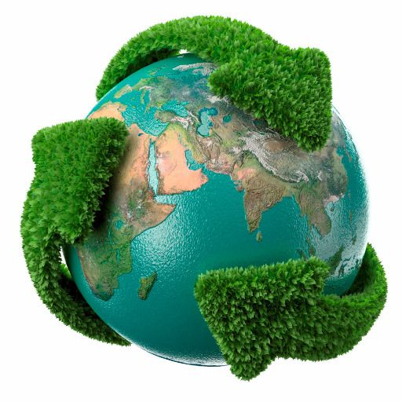

En Japón, la tasa de reciclaje total alcanzó el 19.5% en el año fiscal 2023, de acuerdo con datos del Ministerio de Medio Ambiente. Esta cifra refleja los esfuerzos nacionales para mejorar la clasificación de residuos y fomentar las prácticas de reciclaje en todo el país.
Es importante señalar que esta tasa representa un promedio nacional y puede variar dependiendo de la región y del tipo de residuo.
